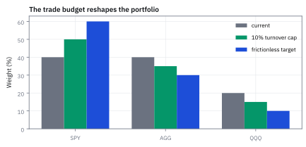
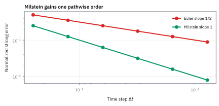
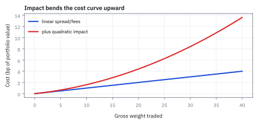

12.8 Mean-Variance with Transaction Costs
เมื่อการย้ายพอร์ตมีต้นทุน คำตอบขึ้นกับพอร์ตที่ถืออยู่ ต้นทุนแบบสัดส่วนสร้างเขตที่ไม่ควรเทรด และเพดาน turnover ทำตัวเหมือนต้นทุนที่แพงขึ้น
กองทุน \$50 ล้าน ถือหุ้นสหรัฐฯ/พันธบัตร/หุ้นเทค 40/40/20 เพราะหุ้นเทควิ่งขึ้นจนเกินสัดส่วน optimizer ของ 12.6 (ผลตอบแทนคาดหวัง 12%/6%/15%, $\gamma=2$, ห้าม short) บอกว่าพอร์ตที่ดีที่สุดคือ 46.41/50.09/3.50 ค่าซื้อขาย 10 bp ของเงินที่ซื้อขาย และ mandate จำกัด turnover รอบนี้ไม่เกิน 10% ของ NAV ผู้จัดการจะขยับทุกตัว 60.6% ของระยะไปทางเป้าหมาย ซึ่งใช้ turnover 10% พอดี นี่คือพอร์ตที่ดีที่สุดภายใต้เพดานไหม?
ลองตอบก่อนเปิดเฉลย
ไม่ใช่ พอร์ตที่ดีที่สุดคือไม่แตะหุ้นสหรัฐฯเลย ขายหุ้นเทค 10 จุดไปซื้อพันธบัตร 10 จุด ได้ 40/50/10 ค่าเป้าหมายสูงกว่าการเดินตามสัดส่วน 1.3 bp ต่อปี (ราว \$6,500 ต่อปี) ด้วย turnover และค่าธรรมเนียม \$10,000 เท่ากันเป๊ะ เมื่องบซื้อขายจำกัด เงินแต่ละดอลลาร์ต้องไปที่ที่ได้ประโยชน์มากที่สุดต่อหน่วย turnover ซึ่งคือย้ายจากหุ้นเทคไปพันธบัตร ตัวคูณของเพดานคือ $\theta=0.017$ บอกราคาของการผ่อนเพดาน
สิ่งที่เราจะสร้าง
ทุกหน้าก่อนหน้านี้คิดว่าย้ายพอร์ตได้ฟรี คำตอบจึงไม่สนว่าตอนนี้ถืออะไรอยู่ ของจริงมีค่าธรรมเนียม ส่วนต่างราคาซื้อขาย และราคาที่ขยับหนีเมื่อสั่งซื้อก้อนใหญ่ หน้านี้ใส่ต้นทุนเหล่านั้นเข้าไปใน objective แล้วใช้เครื่องมือของ 12.6 ซึ่งรับมือกับจุดหักมุมของค่าสัมบูรณ์ได้
เราจะนับการซื้อขายให้ไม่กำกวม ตรวจว่าการย้ายไปหาเป้าหมายคุ้มไหม เขียนเงื่อนไขที่จุดหักมุม แก้พอร์ตที่ดีที่สุดเมื่อมีต้นทุน หาเขตที่คำตอบคือไม่เทรด ใส่เพดาน turnover แล้วดูว่าทำไมการเดินตามสัดส่วนแพ้ อ่านราคาของเพดาน และจบที่ต้นทุนจากการดันราคาซึ่งโตตามกำลังสองของขนาดคำสั่ง
ศัพท์ที่ใช้ในหัวข้อนี้
- Transaction cost
- เงินที่เสียเมื่อเปลี่ยนสิ่งที่ถือ: ค่าคอมมิชชัน ครึ่งหนึ่งของ bid–ask spread และ market impact ใช้หักออกจากประโยชน์ของการเทรด
- One-way turnover
- ครึ่งหนึ่งของผลรวมการเปลี่ยนน้ำหนักแบบค่าสัมบูรณ์ เท่ากับฝั่งซื้อรวม (หรือฝั่งขายรวม) เป็นสัดส่วนของ NAV ใช้วัดว่าพอร์ตถูกเปลี่ยนหน้าไปเท่าไร
- Gross traded notional
- มูลค่าซื้อบวกมูลค่าขาย ไม่หักกลบกัน เป็นฐานที่ค่าธรรมเนียมคิดจริง
- No-trade region
- เขตรอบพอร์ตปัจจุบันที่ประโยชน์ส่วนเพิ่มของการขยับยังไม่ชนะต้นทุน คำตอบที่ดีที่สุดในเขตนี้คืออยู่เฉย ๆ
- Turnover cap
- เพดานของ one-way turnover ต่อรอบ ใช้คุมต้นทุน ภาษี และภาระงานปฏิบัติการ
- Market impact
- ราคาที่ขยับหนีเพราะคำสั่งของเราเอง ยิ่งสั่งก้อนใหญ่เทียบปริมาณซื้อขายของตลาด ยิ่งโตเร็วกว่าเส้นตรง
สัญลักษณ์และหน่วย
| สัญลักษณ์ | ความหมาย | หน่วย |
|---|---|---|
| $W$ | มูลค่าพอร์ตก่อนปรับ \$50 ล้าน | USD |
| $w_0,\ w,\ \Delta w$ | น้ำหนักเดิม น้ำหนักใหม่ และส่วนต่าง | สัดส่วนของ NAV |
| $u_i,\ v_i$ | ส่วนที่ซื้อและส่วนที่ขายของสินทรัพย์ $i$ | สัดส่วนของ NAV |
| $c$ | ต้นทุนแบบสัดส่วน 10 bp = 0.001 ต่อเงินที่ซื้อขายหนึ่งดอลลาร์ | USD ต่อ USD ที่ซื้อขาย |
| $J(w)$ | ค่าเป้าหมาย mean-variance ของ 12.6 $\mu^{\mathsf T}w-2w^{\mathsf T}Vw$ | ผลตอบแทนเทียบเท่าต่อปี |
| $g_i,\ \nu$ | ประโยชน์ส่วนเพิ่ม $\partial J/\partial w_i$ และตัวคูณของงบลงเงินครบ | ต่อหน่วยน้ำหนัก |
| $\tau,\ \theta$ | เพดาน turnover และตัวคูณของมัน | สัดส่วนของ NAV, ต่อหน่วย turnover |
| $\kappa$ | ตัวคูณ market impact แบบกำลังสอง | สัดส่วนของ NAV ต่อ (น้ำหนักที่ซื้อขาย)² |
ขั้นที่ 1 — นับการซื้อขายให้ไม่กำกวม
ก่อนคิดต้นทุนต้องตกลงว่า “ซื้อขายเท่าไร” นับอย่างไร เพราะซื้อหนึ่งขายหนึ่งนับเป็นหนึ่งหรือสองให้ผลต่างกันเท่าตัว ลองกับตัวอย่างตัวเลขกลม ๆ: จาก 40/40/20 ไป 60/30/10 แยกส่วนต่างเป็นส่วนซื้อ $u_i=\max(\Delta w_i, 0)$ กับส่วนขาย $v_i=\max(-\Delta w_i, 0)$
บรรทัดที่สองมาจากงบ: ทั้งพอร์ตเดิมและพอร์ตใหม่รวมได้ 1 ส่วนต่างจึงรวมได้ศูนย์ ส่วนซื้อจึงเท่าส่วนขายเสมอ เงินที่ใช้ซื้อต้องมาจากการขาย ผลรวมค่าสัมบูรณ์จึงนับเงินก้อนเดียวกันสองครั้ง one-way turnover หารสองเพื่อให้ได้สัดส่วนของพอร์ตที่ถูกเปลี่ยนหน้าจริง: 20% หรือ \$10 ล้าน
แต่ค่าธรรมเนียมคิดจากเงินที่ผ่านมือทั้งสองขา ฐานของต้นทุนจึงเป็น gross \$20 ล้าน (ซื้อ \$10 ล้าน ขาย \$10 ล้าน) ที่ 10 bp ได้ \$20,000 หรือ 4 bp ของ NAV
Figure 12.8a — พอร์ตเดิม การเดินตามสัดส่วน และเป้าหมายตัวอย่าง

Figure 12.8b — ต้นทุนแบบสัดส่วนโตเป็นเส้นตรงตาม turnover

ขั้นที่ 2 — เป้าหมายจริงจาก 12.6 และการย้ายคุ้มไหม
โจทย์ให้อะไรมาบ้าง: แบบจำลองของ 12.6: $\mu=(0.12, 0.06, 0.15)$, $V$ สามสินทรัพย์, $\gamma=2$, ลงเงินครบ ห้าม short เป้าหมายเมื่อไม่มีต้นทุนคือ 46.41/50.09/3.50 ที่ $J=0.059175$ ค่าเป้าหมายเป็นผลตอบแทนเทียบเท่าต่อปี ส่วนต้นทุนจ่ายครั้งเดียว เราจึงเทียบกันบนสมมติฐานว่าถือพอร์ตใหม่หนึ่งปี
คำตอบ: ย้ายไปเป้าหมายได้ประโยชน์ 0.004735 ต่อปี หรือ 47.3 bp (ราว \$236,700 บน \$50 ล้าน) จ่ายครั้งเดียว \$16,502 หรือ 3.30 bp คุ้มมาก พอร์ตเดิมเสี่ยงเกิน: SD 15.42% เทียบ 12.61% ที่เป้าหมาย เพราะหุ้นเทค 20% ที่ correlation 0.65 กับหุ้นสหรัฐฯ
ตรวจเองใน 10 วินาที: ประโยชน์ส่วนเพิ่ม $g=\mu-4Vw_0=(0.0100,\ 0.0260,\ -0.0376)$ ต่างกันมาก หุ้นเทคติดลบคือยิ่งถือยิ่งแย่ ตาม 12.2 ที่จุดดีที่สุดค่าเหล่านี้ต้องเท่ากัน ที่นี่ห่างกัน 0.0636
ขั้นที่ 3 — objective ที่มีต้นทุน และเงื่อนไขที่จุดหักมุม
ต้นทุนแบบสัดส่วนคือ $c|w_i-w_{0i}|$ ต่อสินทรัพย์ มีมุมแหลมที่ $w_i=w_{0i}$ ทางขวาความชันคือ $+c$ ทางซ้ายคือ $-c$ ใช้เหตุผลแบบกำแพงของ 12.6 ขั้นที่ 1 แยกเป็นสองข้างของมุม
$g_i-\nu$ คือประโยชน์สุทธิของการเพิ่มสินทรัพย์ $i$ หนึ่งหน่วยโดยเอาเงินมาจากก้อนรวม ($\nu$ คือราคาของงบ 12.4) ถ้าซื้อแล้ว ต้องซื้อจนประโยชน์ส่วนเพิ่มเหลือเท่าต้นทุน $c$ พอดี ถ้าขาย ต้องขายจนสิ่งที่เสียเท่าต้นทุนที่ประหยัด ถ้าไม่แตะเลย การขยับทางไหนก็ไม่คุ้ม: ประโยชน์ต้องอยู่ในช่วง $\pm c$
ต้นทุนเป็นค่าสัมบูรณ์ซึ่ง convex และ $J$ โค้งคว่ำ $N$ จึงโค้งคว่ำ เงื่อนไขชุดนี้พอเพียงสำหรับคำตอบที่ดีที่สุด (12.6)
ขั้นที่ 4 — คำตอบเมื่อมีต้นทุน 10 bp: หยุดก่อนเป้าหมายนิดเดียว
โจทย์ให้อะไรมาบ้าง: จาก 40/40/20 เดาทิศเหมือนขั้นที่ 2: ซื้อหุ้นสหรัฐฯ ซื้อพันธบัตร ขายหุ้นเทค สมการของขั้นที่ 3 สามข้อ ($g_i=\mu_i-4(Vw)_i$) กับงบอีกหนึ่ง เป็นระบบเชิงเส้นสี่ตัวที่ไม่รู้ ($w_1, w_2, w_3, \nu$)
คำตอบ: 45.69/50.11/4.20 ทิศการเทรดตรงกับที่เดา (ซื้อ ซื้อ ขาย) จึงผ่านเงื่อนไข หุ้นสหรัฐฯหยุดต่ำกว่าเป้าหมาย 0.72 จุด หุ้นเทคหยุดสูงกว่า 0.70 จุด เพราะช่วงท้ายของการย้าย ประโยชน์ส่วนเพิ่มเหลือน้อยกว่าต้นทุน 10 bp ค่าสุทธิหลังหักต้นทุน 0.058852 เทียบการเดินถึงเป้าหมายแล้วจ่ายเต็ม 0.058845 ดีกว่าแค่ 0.07 bp ต้นทุนเล็กขนาดนี้แทบไม่เปลี่ยนคำตอบ
ตรวจเองใน 10 วินาที: ส่วนซื้อ $0.0569+0.1011=0.1580$ เท่าส่วนขาย 0.1580 ตามขั้นที่ 1 พันธบัตรเกินเป้าหมาย 0.02 จุด ไม่ขัดกัน เพราะเมื่อหุ้นสหรัฐฯกับหุ้นเทคหยุดก่อน covariance ทำให้ส่วนผสมที่ดีที่สุดของตัวที่เหลือขยับตาม
ขั้นที่ 5 — เขตที่ไม่ควรเทรด: 20 bp ในหน่วยประโยชน์ ไม่ใช่ในหน่วยน้ำหนัก
คำตอบคือ “ไม่เทรดเลย” เมื่อทุกสินทรัพย์ผ่านเงื่อนไขข้อสามของขั้นที่ 3 พร้อมกัน คือมี $\nu$ ตัวเดียวที่ทำให้ทุก $g_i-\nu$ อยู่ในช่วง $\pm c$ ซึ่งเท่ากับว่า $g$ ที่มากที่สุดกับน้อยที่สุดห่างกันไม่เกิน $2c$ ลองดูว่าเขตนี้กว้างเท่าไรในหน่วยน้ำหนัก โดยเริ่มที่เป้าหมาย แล้วเลื่อนไปทางซื้อหุ้นสหรัฐฯขายพันธบัตร $t$ หน่วย
ที่เป้าหมาย $g$ ทุกตัวเท่ากัน เลื่อนไป $t$ แล้วช่องที่ขึ้นมากที่สุด (พันธบัตร $+0.016t$) กับช่องที่ลงมากที่สุด (หุ้นเทค $-0.140t$) ห่างกัน $0.156t$ เขตจึงกว้าง $\pm1.28$ จุดของน้ำหนักในทิศนี้
ตรวจ: 47.61/48.89/3.50 ห่าง 0.00188 ไม่เทรด ส่วน 48.00/48.50/3.50 ห่าง 0.00249 เทรด ที่พอร์ตเดิม 40/40/20 ห่าง 0.0636 เกิน $2c$ ถึง 31.8 เท่า จึงต้องเทรด
หน้าเดิมเขียนว่าเขตกว้าง “20 bp” ตัวเลข $2c=0.002$ นั้นอยู่ในหน่วยของประโยชน์ส่วนเพิ่ม ไม่ใช่น้ำหนัก ในหน่วยน้ำหนักเขตกว้างกว่านั้นมาก และขึ้นกับทิศกับความโค้ง: ยิ่ง covariance ทำให้ชามแบนในทิศไหน เขตในทิศนั้นยิ่งกว้าง
ขั้นที่ 6 — เพดาน turnover 10%: ตัวคูณของเพดานทำตัวเหมือนต้นทุนเพิ่ม
ถ้าไม่มีเพดานคำตอบใช้ turnover 15.80% เกิน 10% เพดานจึงบีบ เพดานเขียนเป็น $\tfrac12\sum_i|w_i-w_{0i}|\le0.10$ มีตัวคูณ $\theta\ge0$ (12.6) ความชันของมันที่มุมคือ $\pm\theta/2$ มันจึงบวกเข้ากับ $c$ ในทุกเงื่อนไขของขั้นที่ 3 เดาว่าไม่แตะหุ้นสหรัฐฯ แล้วใช้เพดานเต็ม: ขายหุ้นเทค 10 จุดซื้อพันธบัตร 10 จุด
สองบรรทัดกลางแก้ได้ทันทีเพราะเป็นผลบวกกับผลต่างของสองสมการ ตัวคูณของเพดานไม่ติดลบ และหุ้นสหรัฐฯที่ไม่แตะผ่านเงื่อนไข “hold” เงื่อนไขครบ ปัญหา convex จึงเป็นคำตอบที่ดีที่สุด เพดานที่บีบทำตัวเหมือนต้นทุน 95 bp ต่อขา แทนที่จะเป็น 10 bp นี่คือเหตุที่คำตอบภายใต้เพดานเลือกเทรดเฉพาะคู่ที่คุ้มที่สุด
ขั้นที่ 7 — ทำให้มันพัง: เดินตามสัดส่วนแพ้ 1.3 bp ต่อปี
โจทย์ให้อะไรมาบ้าง: แผนในโจทย์เปิดเรื่องคือขยับทุกตัว $0.10/0.1650=60.6\%$ ของระยะไปทางเป้าหมาย ใช้ turnover 10% และต้นทุน \$10,000 เท่ากับคำตอบของขั้นที่ 6 ทุกประการ เทียบค่าเป้าหมาย
คำตอบ: การเดินตามสัดส่วนแพ้ 1.30 bp ต่อปี ราว \$6,500 ต่อปีบน \$50 ล้าน ทั้งที่จ่ายค่าธรรมเนียมเท่ากัน ที่พอร์ตเดิม ย้ายเงินหนึ่งหน่วยจากหุ้นเทคไปพันธบัตรได้ประโยชน์ $0.0260-(-0.0376)=0.0636$ แต่ไปหุ้นสหรัฐฯได้แค่ $0.0100+0.0376=0.0476$ เมื่องบซื้อขายมีจำกัด ต้องใช้กับคู่ที่คุ้มที่สุดก่อน
ตรวจเองใน 10 วินาที: หุ้นเทคของทั้งสองแผนลงไปที่ 10.00% เท่ากัน ต่างกันแค่ว่าเงินไปไหน แผนสัดส่วนเอา 3.88 จุดไปหุ้นสหรัฐฯซึ่งขยับไปกับหุ้นเทค (correlation 0.65) จึงลดความเสี่ยงได้น้อยกว่า
ขั้นที่ 8 — ราคาของเพดาน และจุดที่คำตอบเปลี่ยนรูป
ตาม 12.6 ตัวคูณคืออัตราเปลี่ยนของค่าที่ดีที่สุดเมื่อผ่อนข้อบังคับ ทดสอบด้วยการผ่อนเพดานจาก 10% เป็น 10.1% ด้วยรูปแบบเดิม (หุ้นสหรัฐฯไม่แตะ) แล้วหาว่ารูปแบบนี้ใช้ได้ถึงเพดานเท่าไร
ผ่อนเพดาน 0.1 จุด ค่าสุทธิเพิ่ม 0.0000168 ตัวคูณทำนาย 0.0000170 ใกล้กันเพราะเป็นการผ่อนเล็ก แต่รูปแบบ “ไม่แตะหุ้นสหรัฐฯ” ใช้ได้ถึงเพดาน 10.26% เท่านั้น ที่นั่นเงื่อนไข hold ของหุ้นสหรัฐฯชนขอบพอดี เกินนั้นประโยชน์ของหุ้นสหรัฐฯชนะราคาต่อขา คำตอบจึงเริ่มซื้อหุ้นสหรัฐฯด้วย
ที่เพดาน 11% แก้เงื่อนไขชุดใหม่ (ซื้อ ซื้อ ขาย โดยหุ้นเทคลงไปที่ 9%) ได้ 40.76/50.24/9.00 และ $\theta$ ลดเหลือ 0.0137 เพราะเพดานคลายลง ตัวคูณจึงเป็นราคาของการผ่อนเล็ก ๆ ผ่อนก้อนใหญ่ต้องแก้ใหม่ เพราะรูปแบบของคำตอบอาจเปลี่ยน
ขั้นที่ 9 — ต้นทุนจากการดันราคา: ทำไมโตตามกำลังสอง
10 bp คงที่ใช้ได้กับคำสั่งเล็ก คำสั่งใหญ่ดันราคาเอง สมมติว่าระหว่างซื้อ ราคาขยับขึ้นเป็นเส้นตรงตามเงินที่ซื้อไปแล้ว $x$ เทียบมูลค่าซื้อขายเฉลี่ยต่อวัน (ADV): ขึ้น $\eta x/\text{ADV}$ ต้นทุนส่วนเกินคือพื้นที่ใต้เส้นนั้น
ราคาขึ้นเป็นเส้นตรง พื้นที่ใต้เส้นจึงเป็นสามเหลี่ยม ได้กำลังสองหารสอง นี่คือที่มาของพจน์ $\kappa q^2$ ตัวเลข $\eta$ และ ADV เป็นสมมติ (ADV \$250 ล้าน เทียบพอร์ต \$50 ล้าน ในหน่วยล้าน USD และซื้อเท่ามูลค่าซื้อขายทั้งวันแล้วราคาขยับ 6%) ได้ $\kappa=0.006$ ซึ่งเป็นค่าที่ Figure 12.8c ใช้
ซื้อขาย 10% ของ NAV เสียเพิ่ม 0.6 bp หรือ \$3,000 และที่ขนาดเกิน 8.33% ของ NAV ต้นทุนส่วนเพิ่มจาก impact แซงค่าธรรมเนียม 10 bp
$\kappa$ โตตามขนาดกองทุน $W$ กองใหญ่จึงถูกลงโทษหนักกว่าเมื่อเร่งเทรด และต้นทุนกำลังสองทำให้คำตอบเดินไปหาเป้าหมายแค่บางส่วนในแต่ละรอบ (โจทย์ข้อ 1) งานวางแผนแบ่งคำสั่งตามเวลาอยู่ใน 18.6
Figure 12.8c — ต้นทุนเส้นตรงบวก impact ที่โค้งขึ้น

Figure 12.8d — frontier ที่ทำได้จริงหลังหักต้นทุน (ภาพสังเคราะห์)

คำถามที่ควรถามออกมาดัง ๆ
ได้ 47 bp จ่าย 3.3 bp ทำไมไม่คำนวณใหม่และเทรดทุกวัน? เพราะเมื่อถึงใกล้เป้าหมายแล้ว พอร์ตอยู่ในเขตไม่เทรดของขั้นที่ 5 การขยับเพิ่มได้ประโยชน์ไม่ถึงต้นทุน และน้ำหนักที่คำนวณใหม่ทุกวันส่วนใหญ่เปลี่ยนเพราะ noise ใน input (12.5 ขั้นที่ 9) ไม่ใช่เพราะโลกเปลี่ยน เทรดตามทุกวันคือจ่ายต้นทุนเพื่อไล่ noise
ทำไมไม่ใช้เพดาน turnover แทนต้นทุนไปเลย? ใช้ได้ และขั้นที่ 6 แสดงว่าเพดานที่บีบคือต้นทุนแฝง ($c+\theta/2$ ต่อขา) ข้อดีคือคุมได้ง่าย ข้อเสียคือราคาแฝงนั้นกระโดดตามสภาพตลาดโดยไม่มีใครเห็น จึงควรรายงาน $\theta$ คู่กับคำตอบเสมอ
กับดัก: นิยาม turnover หน่วยของต้นทุน และการเดินตามสัดส่วน
การเทรดเดียวกันในขั้นที่ 1 ระบบหนึ่งรายงาน turnover 40% (ผลรวมค่าสัมบูรณ์) อีกระบบรายงาน 20% (one-way) ต่างกันสองเท่า ต้องเขียนนิยามกำกับเสมอ และต้นทุน 10 bp คิดบน gross ไม่ใช่บน one-way ถ้าคิดบน one-way จะได้ \$10,000 แทน \$20,000
ค่าเป้าหมายเป็นต่อปี ต้นทุนจ่ายต่อครั้ง ถ้าปรับพอร์ตแบบในขั้นที่ 2 ทุกเดือน ต้นทุนต่อปีคือราว 12 เท่าของ 3.30 bp ต้องเทียบในหน่วยเวลาเดียวกัน ส่วนการเดินตามสัดส่วนภายใต้เพดานแพ้คำตอบ KKT 1.30 bp ต่อปีในขั้นที่ 7 และการอ่านเขตไม่เทรด “20 bp” เป็นหน่วยน้ำหนักคือความผิดของขั้นที่ 5
ใช้ทำอะไรบนโต๊ะจริง
นโยบาย rebalance ส่วนใหญ่เป็นเขตไม่เทรดในรูปที่ง่ายขึ้น: ปล่อยให้น้ำหนักไหลได้ในช่วงหนึ่งแล้วค่อยปรับ ขั้นที่ 5 บอกว่าความกว้างที่เหมาะขึ้นกับต้นทุนและความโค้งของความเสี่ยง ไม่ควรเป็นตัวเลขเดียวกันทุกสินทรัพย์ เพดาน turnover ต่อรอบเป็นเรื่องปกติของกองทุน และตัวคูณของมันคือตัวเลขที่ควรเอาไปคุยเวลามีคนขอผ่อนเพดาน
ต้นทุนจาก impact กำหนดว่ากลยุทธ์หนึ่งรับเงินได้เท่าไรก่อนผลตอบแทนหายหมด (18.7) และการแบ่งคำสั่งใหญ่ตามเวลาให้ต้นทุนรวมต่ำสุดคือ Almgren–Chriss (18.6) ซึ่งใช้พจน์ $\kappa q^2$ แบบเดียวกับขั้นที่ 9
สามโจทย์ตรวจความเข้าใจ
1. ในทิศสลับหุ้นสหรัฐฯกับพันธบัตร ความโค้งของ $-J$ คือ $h=4d^{\mathsf T}Vd=0.152$ ถ้ามีแต่ต้นทุน impact $\kappa=0.006$ ต่อขา การสลับไปหาเป้าหมายที่ห่าง $t^\star$ ควรทำแค่ไหน?
เฉลย
สลับ $t$ หน่วยเสียประโยชน์ $\tfrac h2(t-t^\star)^2$ จากการยังไม่ถึงเป้า และเสีย impact $\kappa t^2$ สองขา รวม $2\kappa t^2$ ตั้ง derivative เป็นศูนย์: $-h(t-t^\star)-4\kappa t=0$ ได้ $t=\dfrac{h}{h+4\kappa}t^\star=\dfrac{0.152}{0.176}t^\star\approx0.864t^\star$ คือเดิน 86.4% ของทางต่อรอบ ต้นทุนกำลังสองให้การปรับบางส่วน ต่างจากต้นทุนเส้นตรงที่ให้เขตไม่เทรด
2. ถ้าค่าซื้อขายเป็น 20 bp แทน 10 bp คำตอบของขั้นที่ 4 และความกว้างเขตไม่เทรดของขั้นที่ 5 เปลี่ยนอย่างไร?
เฉลย
แก้ระบบเดิมด้วย $c=0.002$ ได้ 44.97/50.13/4.90 ทิศการเทรดยังเป็นซื้อ ซื้อ ขาย จึงผ่าน หยุดห่างเป้าหมายมากขึ้นราวสองเท่า เขตไม่เทรดในทิศสลับหุ้นสหรัฐฯกับพันธบัตรเป็น $2(0.002)/0.156\approx2.56$ จุด กว้างขึ้นสองเท่าตามต้นทุน
3. ถ้าเพดาน turnover เป็น 5% ใช้รูปแบบของขั้นที่ 6 หาคำตอบและ $\theta$
เฉลย
เดาว่าไม่แตะหุ้นสหรัฐฯ ขายหุ้นเทค 5 จุดซื้อพันธบัตร 5 จุด ได้ 40/45/15 $g=(0.0179,\ 0.0261,\ -0.0152)$ จึง $\nu=0.00545$, $c+\theta/2=0.02065$, $\theta=0.0393$ หุ้นสหรัฐฯ $|0.0179-0.00545|=0.01245\le0.02065$ ผ่าน เพดานที่แน่นกว่ามีราคาส่วนเพิ่มสูงกว่า (0.0393 เทียบ 0.017) เพราะยังอยู่ไกลเป้าหมายกว่า
คำนวณซ้ำด้วย JavaScript
รันใน Node.js ได้โดยไม่ติดตั้งแพ็กเกจ โค้ดนับ turnover ต้นทุน และขาซื้อขาย โดยปฏิเสธน้ำหนักที่รวมไม่ได้ 1 หรือ NAV ที่ไม่บวก แก้เงื่อนไขที่จุดหักมุมด้วย Gaussian elimination ที่ปฏิเสธระบบ singular หาเขตไม่เทรด ตรวจคำตอบภายใต้เพดานพร้อมตัวคูณ หาเพดานที่คำตอบเปลี่ยนรูปด้วย bisection และคำนวณต้นทุน impact แล้วพิมพ์ผลเป็น JSON บรรทัดเดียว
function checkWeights(w, n = 3) {
if (!Array.isArray(w) || w.length !== n || !w.every(Number.isFinite)) throw new TypeError(`Need ${n} finite weights`);
if (Math.abs(w.reduce((s, v) => s + v, 0) - 1) > 1e-12) throw new RangeError('Weights must sum to 1');
}
// Trade accounting: one-way turnover is half the sum of absolute weight changes.
function tradeAccount(w0, w, nav, costRate) {
checkWeights(w0, w0.length); checkWeights(w, w0.length);
if (!(nav > 0) || !(costRate >= 0)) throw new RangeError('NAV must be positive and the cost rate non-negative');
const dw = w.map((v, i) => v - w0[i]), l1 = dw.reduce((s, v) => s + Math.abs(v), 0);
const buys = dw.reduce((s, v) => s + Math.max(v, 0), 0), sells = dw.reduce((s, v) => s + Math.max(-v, 0), 0);
return {dw, l1, turnover: l1 / 2, grossUSD: nav * l1, buysUSD: nav * buys, sellsUSD: nav * sells, costUSD: nav * costRate * l1, costFraction: costRate * l1};
}
function solveLinear(A, b) {
const n = A.length, M = A.map((r, i) => [...r, b[i]]);
for (let c = 0; c < n; c++) {
let p = c;
for (let r = c + 1; r < n; r++) if (Math.abs(M[r][c]) > Math.abs(M[p][c])) p = r;
if (Math.abs(M[p][c]) < 1e-14) throw new RangeError('Singular system');
[M[c], M[p]] = [M[p], M[c]];
for (let r = 0; r < n; r++) { if (r === c) continue; const f = M[r][c] / M[c][c]; for (let k = c; k <= n; k++) M[r][k] -= f * M[c][k]; }
}
return M.map((r, i) => r[n] / r[i]);
}
const sd = [0.20, 0.10, 0.35], corr = [[1, 0.30, 0.65], [0.30, 1, 0.30], [0.65, 0.30, 1]];
const V = corr.map((r, i) => r.map((c, j) => c * sd[i] * sd[j])), mu = [0.12, 0.06, 0.15], gamma = 2;
const times = x => V.map(r => r.reduce((s, v, j) => s + v * x[j], 0));
const J = w => mu.reduce((s, m, i) => s + m * w[i], 0) - gamma * w.reduce((s, v, i) => s + v * times(w)[i], 0);
const marginal = w => mu.map((m, i) => m - 2 * gamma * times(w)[i]); // g_i = dJ/dw_i
// Kink conditions with a proportional cost k per unit traded: g_i - nu = k s_i for traded assets (s_i = +1 buy, -1 sell).
function solveSigns(signs, k, w0) {
const traded = [0, 1, 2].filter(i => signs[i] !== 0), held = [0, 1, 2].filter(i => signs[i] === 0);
const rows = [], rhs = [];
traded.forEach(i => { rows.push([...traded.map(j => 2 * gamma * V[i][j]), 1]); rhs.push(mu[i] - k * signs[i] - held.reduce((s, j) => s + 2 * gamma * V[i][j] * w0[j], 0)); });
rows.push([...traded.map(() => 1), 0]); rhs.push(1 - held.reduce((s, j) => s + w0[j], 0));
const sol = solveLinear(rows, rhs), w = [...w0];
traded.forEach((i, a) => { w[i] = sol[a]; });
return {w, nu: sol[traded.length]};
}
const w0 = [0.40, 0.40, 0.20], nav = 50e6, c = 0.001;
const target = solveSigns([1, 1, -1], 0, w0).w; // frictionless: every g_i equals nu
const withCost = solveSigns([1, 1, -1], c, w0);
const net = w => J(w) - c * w.reduce((s, v, i) => s + Math.abs(v - w0[i]), 0);
// Turnover cap 10%: stocks untouched, bonds +10 points, tech -10 points; read the multipliers off the kink conditions.
function capCheck(w, k = c) {
const g = marginal(w), nu = (g[1] + g[2]) / 2, perLeg = (g[1] - g[2]) / 2;
return {w, g, nu, perLeg, theta: 2 * (perLeg - k), stockGap: Math.abs(g[0] - nu), holdsStock: Math.abs(g[0] - nu) <= perLeg};
}
const capped = capCheck([0.40, 0.50, 0.10]);
// Above the switch point stocks are bought too: signs (+,+,-), tech sold down to 0.20 - tau, unknown per-leg price k.
function capAllTraded(tau) {
const w3 = 0.20 - tau, rows = [], rhs = [];
[0, 1, 2].forEach(i => { rows.push([2 * gamma * V[i][0], 2 * gamma * V[i][1], 1, [1, 1, -1][i]]); rhs.push(mu[i] - 2 * gamma * V[i][2] * w3); });
rows.push([1, 1, 0, 0]); rhs.push(1 - w3);
const [w1, w2, nu, k] = solveLinear(rows, rhs);
return {w: [w1, w2, w3], nu, perLeg: k, theta: 2 * (k - c)};
}
const naiveShare = 0.10 / tradeAccount(w0, target, nav, c).turnover;
const naive = w0.map((v, i) => v + naiveShare * (target[i] - v));
const swap = [1, -1, 0], shift = times(swap).map(v => -2 * gamma * v); // change of g per unit swap
const band = 2 * c / (Math.max(...shift) - Math.min(...shift));
const spread = w => { const g = marginal(w); return Math.max(...g) - Math.min(...g); };
console.log(JSON.stringify({
warmup: tradeAccount([0.40, 0.40, 0.20], [0.60, 0.30, 0.10], nav, c),
target, J0: J(w0), Jtarget: J(target), gain: J(target) - J(w0), fullTrade: tradeAccount(w0, target, nav, c),
marginalAt0: marginal(w0), spreadAt0: spread(w0),
withCost: {...withCost, account: tradeAccount(w0, withCost.w, nav, c), net: net(withCost.w), netTarget: net(target), shortfall: target.map((v, i) => v - withCost.w[i])},
band: {shift, halfWidth: band, inside: {w: [0.4761, 0.4889, 0.035], spread: spread([0.4761, 0.4889, 0.035])},
outside: {w: [0.48, 0.485, 0.035], spread: spread([0.48, 0.485, 0.035])}},
capped: {...capped, J: J(capped.w), account: tradeAccount(w0, capped.w, nav, c)},
naive: {w: naive, share: naiveShare, J: J(naive), account: tradeAccount(w0, naive, nav, c), lossBp: (J(capped.w) - J(naive)) * 1e4},
capRelax: {check: capCheck([0.40, 0.501, 0.099]), netGain: net([0.40, 0.501, 0.099]) - net([0.40, 0.50, 0.10]), predicted: capped.theta * 0.001},
cap11: capAllTraded(0.11),
switchCap: (() => { let lo = 0.05, hi = 0.11; for (let k = 0; k < 100; k++) { const m = (lo + hi) / 2; if (capCheck([0.40, 0.40 + m, 0.20 - m]).holdsStock) lo = m; else hi = m; } return lo; })(),
impact: {kappa: 0.06 * nav / (2 * 250e6), tenPercent: {fraction: 0.006 * 0.01, usd: 0.006 * 0.01 * nav}, crossover: c / (2 * 0.006),
figureAt40bp: (c * 0.4 + 0.006 * 0.16) * 1e4},
exercises: {partial: 0.152 / (0.152 + 4 * 0.006), cost20: solveSigns([1, 1, -1], 0.002, w0), band20: 2 * 0.002 / (Math.max(...shift) - Math.min(...shift)),
cap5: capCheck([0.40, 0.45, 0.15])}
}));ที่มาที่ไป
โจทย์ของ Markowitz ปี 1952 ไม่มีต้นทุน Richard Michaud ชี้ในปี 1989 ว่า optimizer ที่ไม่มีต้นทุนไล่ความคลาดเคลื่อนของ input จนเทรดมากเกินจริง Mark Davis กับ Andrew Norman (1990) และ Bernard Dumas กับ Elisa Luciano (1991) พิสูจน์ว่าต้นทุนแบบสัดส่วนทำให้คำตอบมีเขตไม่เทรด และ Robert Almgren กับ Neil Chriss (2000) วางแบบจำลอง impact ที่ใช้กันแพร่หลายในการแบ่งคำสั่ง
ข้อจำกัด: หน้านี้สมมติอะไร และของจริงเป็นอย่างไร
| เรื่อง | หน้านี้สมมติว่า | ของจริง | ผลเวลาใช้งาน |
|---|---|---|---|
| รูปของต้นทุน | 10 bp เท่ากันทุกสินทรัพย์ และ impact แบบกำลังสองที่รู้ $\kappa$ | spread และ impact ต่างกันรายสินทรัพย์และรายวัน | ต้องประมาณรายตัวและเก็บต้นทุนจริงกลับมาปรับ |
| หน่วยเวลา | ถือหนึ่งปี ต้นทุนจ่ายครั้งเดียว | ปรับพอร์ตหลายรอบต่อปี | ต้องแปลงต้นทุนเป็นต่อปีตามความถี่ |
| รอบเดียว | ตัดสินใจรอบนี้รอบเดียว | การเทรดวันนี้เปลี่ยนต้นทุนของรอบถัดไป | การวางแผนหลายรอบดีกว่าการคิดทีละรอบ |
| input | $\mu$ และ $V$ รู้แน่นอน | $\mu$ มีความคลาดเคลื่อนมาก (12.5) | เขตไม่เทรดช่วยกันการไล่ noise แต่ไม่ได้แก้ input ผิด |
สิ่งที่ควรตอบได้หลังอ่าน
- one-way turnover คือ $\tfrac12\lVert\Delta w\rVert_1$ ส่วนค่าธรรมเนียมคิดบน gross ซึ่งเป็นสองเท่า: 40/40/20 ไป 60/30/10 คือ turnover 20% gross \$20 ล้าน ต้นทุน \$20,000
- ต้นทุนแบบสัดส่วนให้เงื่อนไข: ซื้อจน $g_i-\nu=c$ ขายจน $g_i-\nu=-c$ ไม่แตะเมื่อ $|g_i-\nu|\le c$ จาก 40/40/20 ได้ 45.69/50.11/4.20
- เขตไม่เทรดคือ $\max g-\min g\le2c$ ในหน่วยประโยชน์ ในหน่วยน้ำหนักกว้าง $\pm1.28$ จุดในทิศสลับหุ้นสหรัฐฯกับพันธบัตร
- เพดาน turnover ที่บีบคือต้นทุนแฝง $c+\theta/2$: ที่ 10% คำตอบคือ 40/50/10 ด้วย $\theta=0.017$ และการเดินตามสัดส่วนแพ้ 1.3 bp ต่อปี
- impact ที่ราคาขยับเป็นเส้นตรงให้ต้นทุน $\kappa q^2$ ซึ่งแซงค่าธรรมเนียม 10 bp ที่ขนาดเกิน 8.33% ของ NAV เมื่อ $\kappa=0.006$
บทที่ 13 เปลี่ยนเรื่องจาก optimization ไปสู่แคลคูลัสของราคาที่สั่นตลอดเวลา ซึ่งเป็นเครื่องมือที่ต้องใช้ก่อนจะพิสูจน์สูตรราคา option ที่ 12.7 ยืมมาใช้